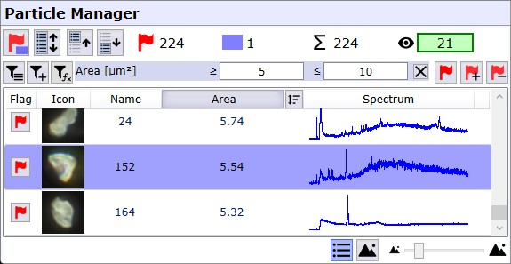
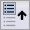
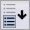
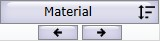
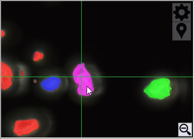
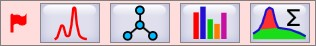
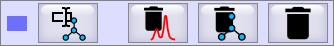

颗粒管理器显示当前颗粒项目中的所有颗粒。可用于选择颗粒，并将选定颗粒用于拉曼测量、数据库搜索或统计分析。

分析选择
标记
仅标记的颗粒用于
- 拉曼测量
- TrueMatch数据库搜索
- 统计分析
- 导出
选择
选择（蓝色行）可用于
- 标记/取消标记颗粒
- 删除颗粒、颗粒光谱或颗粒材料
- 计算光谱属性
- 定义自定义材料
切换所有选定颗粒的标记状态。
选择列表中的所有颗粒。

选择列表中当前选定颗粒上方的所有颗粒。
选择列表中当前选定颗粒下方的所有颗粒。通过列表选择
您可以单击任何行以选择单个颗粒。选定的颗粒将显示在颗粒详细信息视图中。使用键盘上的Shift或Control键可选择多个项目。
在列表中切换标记
您可以单击颗粒行条目最左侧的框来标记或取消标记该颗粒。使用快捷键空格键切换所有选定颗粒的标记。
颗粒数量
54：标记的颗粒数量。1：选定的颗粒数量。55：当前项目中的颗粒总数。48：列表视图中可见的颗粒数量。
颗粒过滤
在此您可以过滤符合特定条件的颗粒。
打开快速过滤菜单以保存和重新加载预定义的过滤器
参见 过滤表达式编辑器
仅标记当前可见的颗粒
将当前可见的颗粒添加到现有已标记项目中
从现有已标记项目中移除当前可见的颗粒
排序
单击列标题区域的按钮，以定义应在列中显示哪个颗粒属性。所选属性也用于项目排序。
反向
如果选中，当前颗粒列表的顺序将反转。
如果颗粒按材料或任何布尔属性排序，您可以使用箭头按钮快速跳转到下一个材料/不同值。

列表视图设置
在此您可以在列表视图和缩略图视图之间切换。两种视图都有自定义缩略图大小。
颗粒详细信息
预览图像

预览图像显示颗粒图像。列表视图中可见的所有颗粒以绿色叠加层显示。红色颗粒为已标记。蓝色颗粒为已选定，粉色颗粒为已选定且已标记。
单击选择
单击任何颗粒可在列表中选择它。按住鼠标左键并在移动鼠标时更改选择。
 移动样品到鼠标位置
移动样品到鼠标位置
启用时，在图像中单击某处以将样品定位器移动到所需位置。
操作
查找颗粒
返回查找颗粒视图，以便更改掩膜并创建新的颗粒列表。
对标记颗粒的操作

测量
打开 测量视图。在此您可以在每个颗粒处获取拉曼光谱并将其分配给颗粒。仅在WITec Control运行时可用。
使用TrueMatch进行材料搜索
打开 TrueMatch搜索视图。在此您可以在光谱数据库中搜索所有颗粒光谱并为每个颗粒分配材料名称。仅当标记了带有光谱的颗粒时可用。
颗粒报告
打开 颗粒报告视图。在此您创建并自定义所有标记颗粒的报告。
计算光谱属性
这将计算所有选定颗粒的拉曼或荧光信号量的估计值以及关于过饱和的是否信息。参见 光谱属性。
对选定颗粒的操作

定义自定义材料
在此您可以输入材料名称并将其分配给选定的颗粒。
删除光谱
这将从选定颗粒中删除光谱及其信息（材料、光谱属性）。仅当选择了带有光谱的颗粒时可用。
删除材料
这将从选定颗粒中删除材料名称。仅当选择了带有光谱且已分配材料的颗粒时可用。
删除颗粒
删除所有选定颗粒。